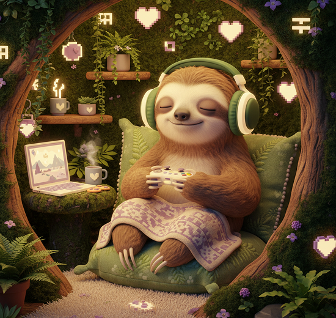

© 2026 SAGESLOTH.GG
Tiny mindfulness quests for gamers who want steadier focus softer tilt , ant better breaks-without leaving the party

A boxed-breathing checkpoint for shaky hands and racing thoughts.
START QUEST →Release your grip, reset your posture, and give your eyes a softer target.
START QUEST →name the frustration, lower the volume, and queue again with intention.
START QUEST →QUEST 01 / RESPAWN BREATH
02:14
Clear prompts, visible timers, and zero mystical jargon. Learn one practical skill at a time, then take it. straight back into play.
PLAYER NOTE
“I used Respawn Breath after a rough ranked loss. Three minutes later I was laughing with my squad instead of rage-queueing.”
— Mina, support main & recovering button-masher
one tiny reset, one player story, no spam
© 2026 SAGESLOTH.GG